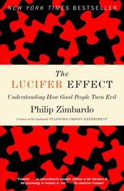

The Lucifer Effect: Understanding How Good People Turn Evil
Book·Philip Zimbardo, 2007·路西法效应

Zimbardo's own account of the Stanford prison experiment, which should be read together with later criticism of it.
- Author
- Philip Zimbardo
- Year
- 2007
- Difficulty
- Intermediate
- Kind
- Critique
- Schools
- Conformity and Obedience
- Core theories
- Stanford Prison Experiment
Editions
- Chinese edition 《路西法效应》 [美]菲利普·津巴多 · tr. 孙佩妏 / 陈雅馨 · 生活·读书·新知三联书店 · 2010 Douban 8.5 (7066 ratings) Douban page ↗
- English edition The Lucifer Effect: Understanding How Good People Turn Evil Philip Zimbardo · Random House, first edition · 2007 Open Library ↗